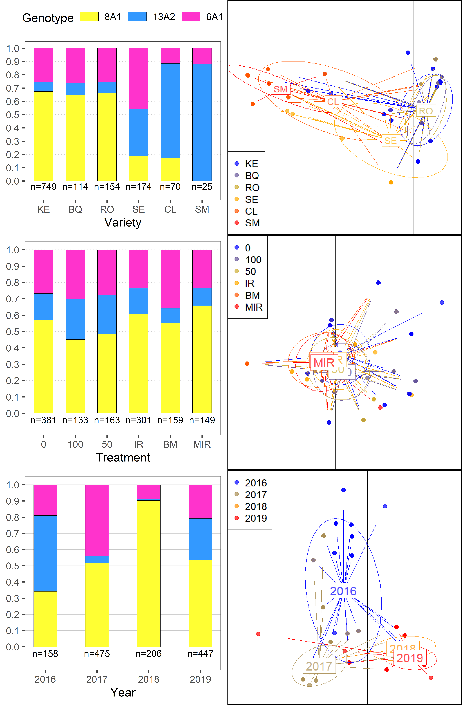

Pub figures
Some of figures from different segments of the analysis were colated for the manuscript.
Here we present the process used to put them together. ## Treatments analysis Number of treatments and proportion of the total dose used in fungicide trials.
Load packages
list.of.packages <-
c(
"tidyverse",
"devtools",
"here",
"magick",
"egg",
"conflicted",
"poppr"
)
new.packages <-
list.of.packages[!(list.of.packages %in% installed.packages()[, "Package"])]
#Download packages that are not already present in the library
if (length(new.packages))
install.packages(new.packages)
packages_load <-
lapply(list.of.packages, require, character.only = TRUE)
#Print warning if there is a problem with installing/loading some of packages
if (any(as.numeric(packages_load) == 0)) {
warning(paste("Package/s: ", paste(list.of.packages[packages_load != TRUE], sep = ", "), "not loaded!"))
} else {
print("All packages were successfully loaded.")
}## [1] "All packages were successfully loaded."rm(list.of.packages, new.packages, packages_load)
#if instal is not working try
#install.packages("ROCR", repos = c(CRAN="https://cran.r-project.org/"))Population frequencies and DAPC analysis
GGplots from the frequency analysis wee colated using ‘gpubr’ and DAPC plots using ‘magick’.
plotls <- readRDS(file = here::here("results", "gen", "freq","freq_plots.RDS"))
plotls <-
lapply(plotls, function(x)
x <- x+
theme(plot.background = element_rect(size=.3,linetype="solid",color="black")))
plotf <-
ggpubr::ggarrange(plotlist = plotls,
heights = c(1,1,1),
# labels = c("r","rr"),
nrow = 3)
ggsave(
plot = plotf,
filename = here::here("results", "gen", "freq", "Freq_all.png"),
width = 2.9,
height = 9,
dpi = 820
)
# Read external images
#shell.exec(here::here("results", "gen","dapc", "treatment.png"))
t = image_read(here::here("results", "gen","dapc", "treatment.png"))
v = image_read(here::here("results", "gen","dapc", "var.png"))
y = image_read(here::here("results", "gen","dapc", "year.png"))
imgs = c(v,t,y)
# concatenate them left-to-right (use 'stack=T' to do it top-to-bottom)
side_by_side = image_append(imgs, stack=T)
# save
image_write(side_by_side,
path = here::here("results", "gen","dapc","dapcs", "full_dapc.png"),
format = "png")
#add the frequency plots
f = image_read(here::here("results", "gen", "freq", "Freq_all.png"))
dapcs = image_read(here::here("results", "gen","dapc","dapcs", "full_dapc.png"))
#Append and save the image
scale <- paste0("x", 7380)
# concatenate them left-to-right (use 'stack=T' to do it top-to-bottom)
side_by_side <- image_append(c(f, image_scale(dapcs, scale)), stack = FALSE)
image_write(side_by_side,
path = here::here("results", "gen","dapc","dapcs", paste0(scale, "full.png")),
format = "png",
# width = 4500,
# height = 3700
)
#To open the figure in external viewer uncoment the following lines
#shell.exec(here::here("results", "gen","dapc","dapcs", paste0(scale, "full.png")))

Final figure
Disease and yield
Results of the foliar disease controll yield analysis were colated in single figure using ‘magick’ package.
dd <-
readRDS( file = here::here("results", "dis", "dis_fin.RDS"))
yd <-
readRDS( file = here::here("results", "yield", "yld_fin.RDS"))
yld <-
readRDS( file = here::here("results", "yield", "yld_dat_fin.RDS"))
audpc_data <-
readRDS( file = here::here("results", "dis", "dis_audpc_fin.RDS"))
dodging <- .8
pdfin <-
dd %>%
mutate(
line_positions = as.numeric(factor(variety, levels = unique(variety))),
line_positions = line_positions + .5,
line_positions = ifelse(line_positions == max(line_positions), NA, line_positions),
line_positions = ifelse(year == 2016 &
variety == "SM", 5.5, line_positions),
line_positions = ifelse(year == 2016 &
variety == "CL", 4.5, line_positions),
line_positions = ifelse(year == 2016 &
variety == "SE", 3.5, line_positions),
line_positions = ifelse(year == 2016 &
variety == "KE", 1.5, line_positions)
) %>%
ggplot(data = ., aes(x = variety, y = prop)) +
geom_errorbar(
aes(
ymin = lower.CL,
ymax = upper.CL,
group = treatment,
color = treatment
),
position = position_dodge(width = dodging),
width = .2
) +
geom_point(
aes(y = prop, group = treatment, color = treatment),
size = 1,
shape = 2,
position = position_dodge(width = dodging)
)+
geom_point(
data = subset(audpc_data),
aes(y = rAUDPC_adj, color = treatment, group = treatment),
size = .2,
alpha = .5,
position = position_dodge(width = dodging)
) +
facet_wrap(~ year, ncol = 1)+
scale_color_brewer("Programme:", palette = "Dark2") +
theme_article() +
theme(legend.position = "bottom",
text = element_text(size = 13)) +
geom_vline(aes(xintercept = line_positions),
size = .2,
alpha = .6) +
labs(colour = "Programme:",
x = "Variety",
y = "rAUDPC")
pdfin+
ggsave(
filename = here::here("results", "dis", "Effects final ver.png"),
width = 4,
height = 7,
dpi = 820
)
py_fin <-
yd %>%
mutate(
line_positions = as.numeric(factor(variety, levels = unique(variety))),
line_positions = line_positions + .5,
line_positions = ifelse(line_positions == max(line_positions), NA, line_positions),
line_positions = ifelse(year == 2016 &
variety == "SM", 5.5, line_positions),
line_positions = ifelse(year == 2016 &
variety == "SE", 4.5, line_positions)
) %>%
ggplot(data = ., aes(x = variety, y = lsmean)) +
geom_errorbar(
aes(
ymin = lower.CL,
ymax = upper.CL,
group = treatment,
color = treatment
),
position = position_dodge(width = dodging),
width = .2
) +
geom_point(
aes(y = lsmean, group = treatment, color = treatment),
size = 1,
shape = 2,
position = position_dodge(width = dodging)
) +
geom_point(
data = yld,
aes(y = marketable, color = treatment, group = treatment),
size = .2,
alpha = .5,
position = position_dodge(width = dodging)
) +
facet_wrap(~ year, ncol = 1) +
scale_color_brewer("Programme:", palette = "Dark2") +
theme_article() +
theme(legend.position = "bottom",
text = element_text(size = 13)) +
geom_vline(aes(xintercept = line_positions),
size = .2,
alpha = .6) +
labs(colour = "Programme:",
x = "Variety",
y = "Yield (t per ha)")
py_fin <-
py_fin+
facet_wrap(~ year, ncol = 1)
ggsave(
py_fin,
filename = here::here("results", "yield", "Effects final ver.png"),
width = 3.5,
height = 7,
dpi = 820
)
plotls <- list(pdfin,py_fin)
plotls <-
lapply(plotls, function(x)
x <- x+
theme(plot.background = element_rect(size=.3,linetype="solid",color="black"),
text = element_text(size= 11))
)
ggpubr::ggarrange(plotlist = plotls,
widths = c(2.5,2.5),
heights = c(.5,.5),
labels = c("a)","b)"),
nrow = 1,
common.legend = TRUE,
legend = "bottom")+
ggsave(filename= here::here("results", "dis", "dis_yld.png"),
width = 7.5, height =10, dpi = 620)